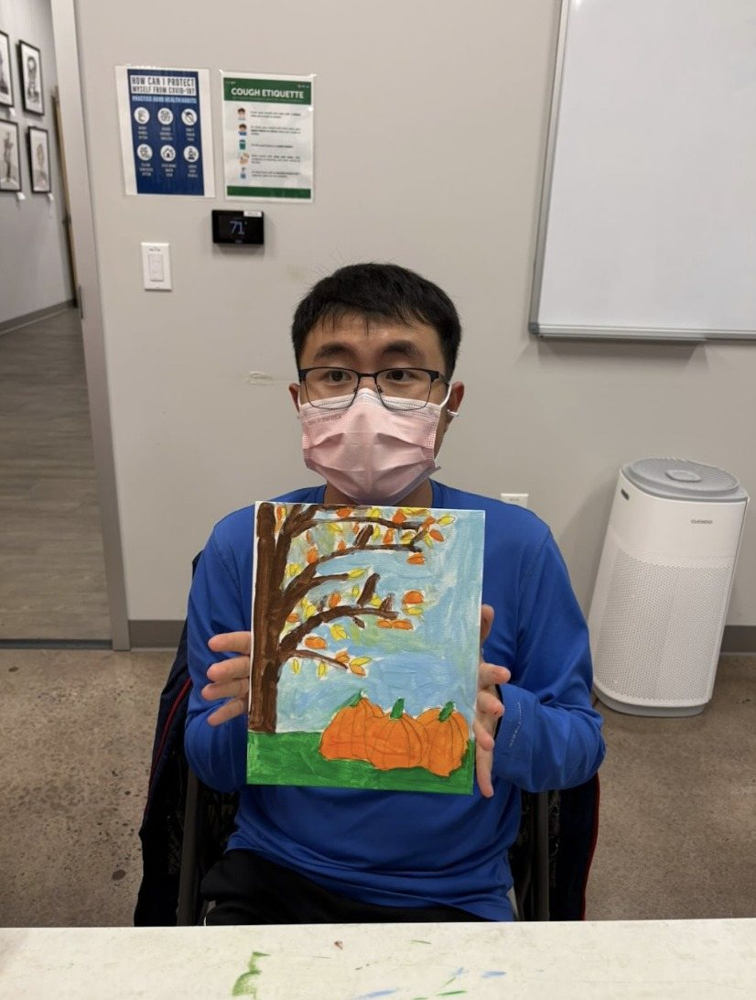
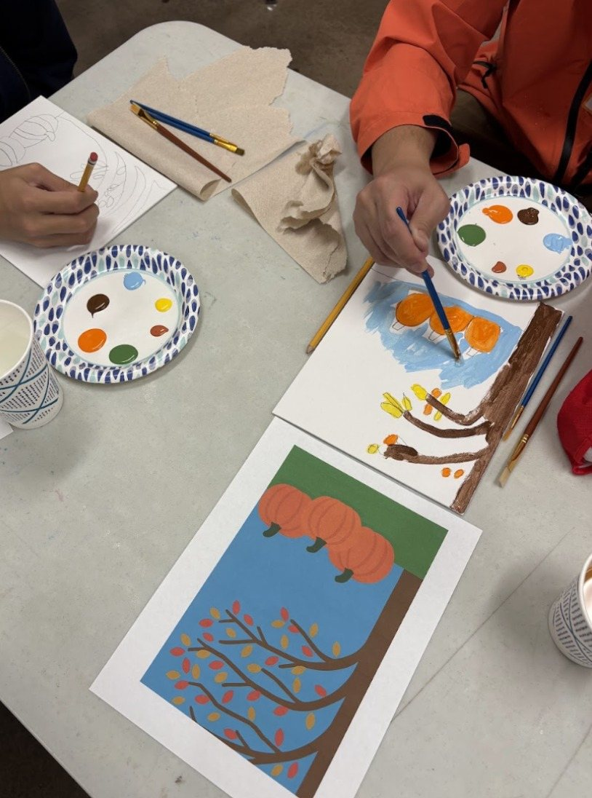
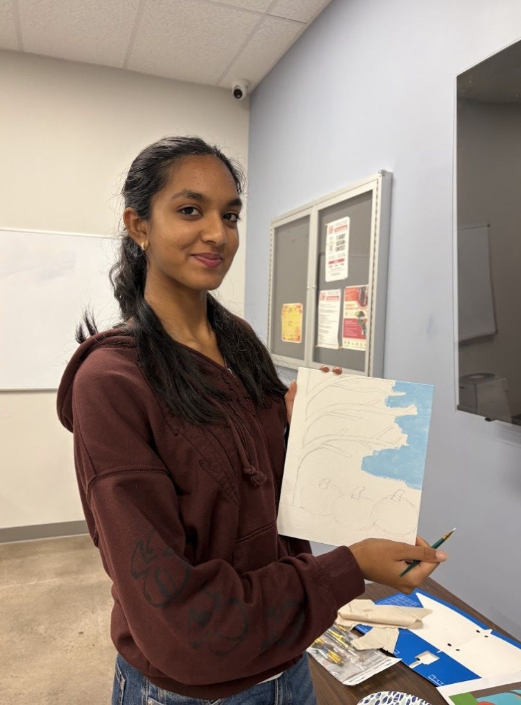

← Neurodivergent Community Workshops
Friends of Children with Special Needs (FCSN)
November 2025
For this FCSN workshop we painted an autumn tree with bright orange pumpkins at its base. Participants sketched, mixed their own colors, and filled in the sky, branches, and leaves one step at a time.
Thank you to everyone at FCSN for painting with us!


